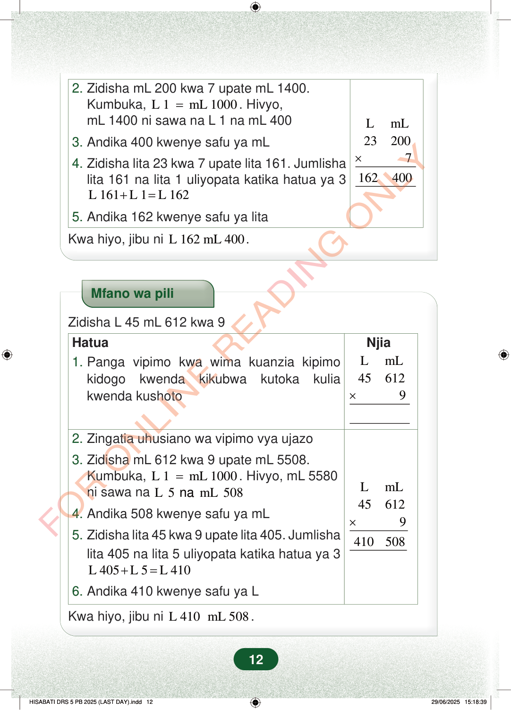

2.Zidisha mL 200 kwa 7 upate mL 1400.Kumbuka,L 1mL 1000=. Hivyo,mL 1400 ni sawa na L 1 na mL 4003.Andika 400 kwenye safu ya mLLmL232007162400×4.Zidisha lita 23 kwa 7 upate lita 161. Jumlishalita 161 na lita 1 uliyopata katika hatua ya 3L 161L 1L 162+=5.Andika 162 kwenye safu ya litaKwa hiyo, jibu niL 162 mL 400.Mfano wa piliZidisha L 45 mL 612 kwa 9NjiaLmL456129×Hatua1.Panga vipimo kwa wima kuanzia kipimokidogo kwenda kikubwa kutoka kuliakwenda kushoto2.Zingatia uhusiano wa vipimo vya ujazo3.Zidisha mL 612 kwa 9 upate mL 5508.Kumbuka,L 1mL 1000=. Hivyo, mL 5580ni sawa naL5mL508na4.Andika 508 kwenye safu ya mLLmL456129410508×5.Zidisha lita 45 kwa 9 upate lita 405. Jumlishalita 405 na lita 5 uliyopata katika hatua ya 3L 405L 5L 410+=6.Andika 410 kwenye safu ya LKwa hiyo, jibu niL 410 mL 508.12
2. Zidisha mL 200 kwa 7 upate mL 1400. Kumbuka, L 1 mL 1000 = . Hivyo, mL 1400 ni sawa na L 1 na mL 400
3. Andika 400 kwenye safu ya mL
L mL 23 200 7 162 400 ×
4. Zidisha lita 23 kwa 7 upate lita 161. Jumlisha lita 161 na lita 1 uliyopata katika hatua ya 3
L 161 L 1 L 162 + =
5. Andika 162 kwenye safu ya lita
Kwa hiyo, jibu ni L 162 mL 400 .
Mfano wa pili
Zidisha L 45 mL 612 kwa 9
Njia
L mL 45 612 9 ×
Hatua 1. Panga vipimo kwa wima kuanzia kipimo kidogo kwenda kikubwa kutoka kulia kwenda kushoto
2. Zingatia uhusiano wa vipimo vya ujazo
3. Zidisha mL 612 kwa 9 upate mL 5508. Kumbuka, L 1 mL 1000 = . Hivyo, mL 5580 ni sawa na L 5 mL 508 na
4. Andika 508 kwenye safu ya mL
L mL 45 612 9 410 508 ×
5. Zidisha lita 45 kwa 9 upate lita 405. Jumlisha lita 405 na lita 5 uliyopata katika hatua ya 3
L 405 L 5 L 410 + =
6. Andika 410 kwenye safu ya L
Kwa hiyo, jibu ni L 410 mL 508 .
12
Hatua za kumalizia kuzidisha L 23 mL 200 kwa 7. Jibu linaonyeshwa kuwa L 162 mL 400.2. Zidisha mL 200 kwa 7 upate mL 1400.Kumbuka, L 1 = mL 1000.Hivyo, mL 1400 ni sawa na L 1 na mL 4003. Andika 400 kwenye safu ya mL4. Zidisha lita 23 kwa 7 upate lita 161.Jumlisha lita 161 na lita 1 uliyopata katika hatua ya 3L\ 161 + L\ 1 = L\ 1625. Andika 162 kwenye safu ya litaKwa hiyo, jibu ni L 162 mL 400.Mfano wa piliZidisha L 45 mL 612 kwa 9Mfano wa pili wa kuzidisha L 45 mL 612 kwa 9 kwa hatua. Jibu la mwisho ni L 410 mL 508.HatuaNjia1. Panga vipimo kwa wima kuanzia kipimo kidogo kwenda kikubwa kutoka kulia kwenda kushoto.2. Zingatia uhusiano wa vipimo vya ujazo3. Zidisha mL 612 kwa 9 upate mL 5508.Kumbuka, L 1 = mL 1000.Hivyo, mL 5580 ni sawa na L 5 na mL 5084. Andika 508 kwenye safu ya mL5. Zidisha lita 45 kwa 9 upate lita 405.Jumlisha lita 405 na lita 5 uliyopata katika hatua ya 3L 405 + L 5 = L 4106. Andika 410 kwenye safu ya LKwa hiyo, jibu ni L 410 mL 508.